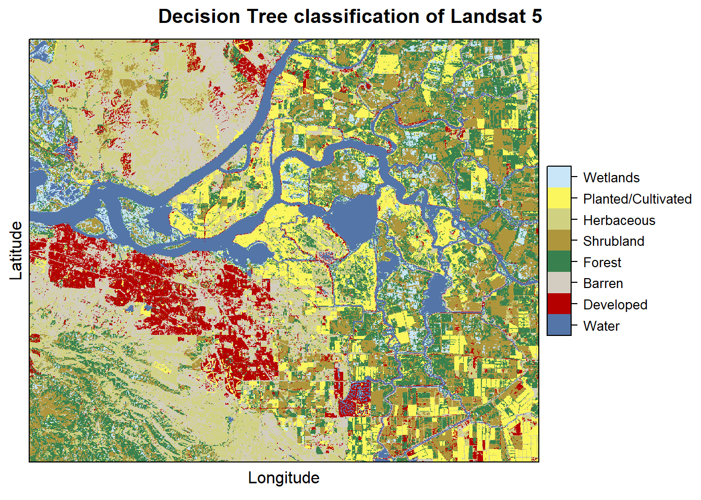
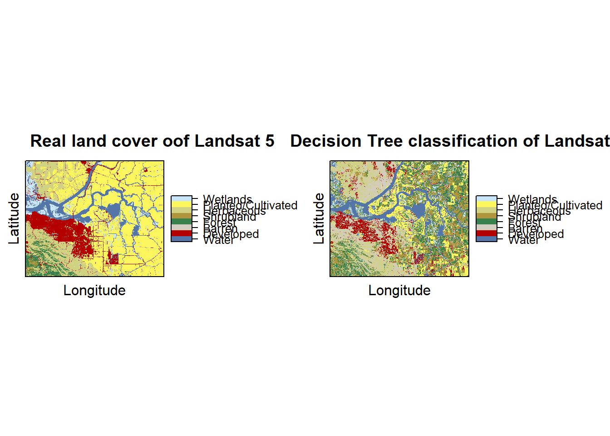

Chapter 6 Classify
Now we have a trained classification model that we can use to classify the cells in the landsat rasterstack.
# Now predict the subset data based on the model; prediction for entire area takes longer time
pr2011 <- predict(landsat5, cart, type='class')
pr2011## class : RasterLayer
## dimensions : 1230, 1877, 2308710 (nrow, ncol, ncell)
## resolution : 0.0002694946, 0.0002694946 (x, y)
## extent : -121.9258, -121.42, 37.85402, 38.1855 (xmin, xmax, ymin, ymax)
## crs : +proj=longlat +datum=WGS84 +no_defs +ellps=WGS84 +towgs84=0,0,0
## source : memory
## names : layer
## values : 1, 9 (min, max)
## attributes :
## ID value
## from: 1 1
## to : 8 9We can plot the classification results
pr2011 <- ratify(pr2011)
rat <- levels(pr2011)[[1]]
rat$legend <- classdf$classnames
levels(pr2011) <- rat
levelplot(pr2011, maxpixels = 1e6,
col.regions = classcolor,
scales=list(draw=FALSE),
main = "Decision Tree classification of Landsat 5")
We can plot side by side the real and predicted land cover in order to assess the classification model accuracy
plot1 = levelplot(nlcd2011, maxpixels = 1e6,
col.regions = classcolor,
scales=list(draw=FALSE),
main = "Real land cover oof Landsat 5")
plot2 = levelplot(pr2011, maxpixels = 1e6,
col.regions = classcolor,
scales=list(draw=FALSE),
main = "Decision Tree classification of Landsat 5")
library(gridExtra)
grid.arrange(plot1,plot2, ncol=2)
6.1 Model Evaluation
Now we have to assess the accuracy of the model. Two metrics are widely used in remote sensing: “overall accuracy” and “kappa”.
6.1.1 K-fold cross validation
We will use k-fold cross validation for the model evaluation. This technique consists on splitting the data to fit the model into k groups. In turn, one of the groups will be used for model testing, while the rest of the data is used for model training.
## j
## 1 2 3 4 5
## 320 320 320 320 320Now we trainand test the model five times, each time computing a confusion matrix that we store in a list.
x <- list()
for (k in 1:5) {
train <- sampdata[j!= k, ]
test <- sampdata[j == k, ]
cart <- rpart(as.factor(classvalue)~., data=train, method = 'class', minsplit = 5)
pclass <- predict(cart, test, type='class')
# create a data.frame using the reference and prediction
x[[k]] <- cbind(test$classvalue, as.integer(pclass))
}Now we combine the five list elements in a single dataframe
y <- do.call(rbind, x)
y <- data.frame(y)
colnames(y) <- c('observed', 'predicted')
conmat <- table(y)
# change the name of the classes
colnames(conmat) <- classdf$classnames
rownames(conmat) <- classdf$classnames
conmat## predicted
## observed Water Developed Barren Forest Shrubland Herbaceous
## Water 175 6 0 3 0 0
## Developed 2 90 51 8 10 22
## Barren 7 39 82 4 19 38
## Forest 0 2 1 106 57 1
## Shrubland 0 3 5 59 102 12
## Herbaceous 0 9 36 10 27 109
## Planted/Cultivated 0 7 11 34 42 19
## Wetlands 18 10 6 36 29 5
## predicted
## observed Planted/Cultivated Wetlands
## Water 7 9
## Developed 11 6
## Barren 5 6
## Forest 6 27
## Shrubland 12 7
## Herbaceous 8 1
## Planted/Cultivated 69 18
## Wetlands 33 636.1.2 Overall accuracy
## [1] 1600# number of correctly classified cases per class
diag <- diag(conmat)
# Overall Accuracy
OA <- sum(diag) / n
OA## [1] 0.49756.1.3 Kappa statistic
# observed (true) cases per class
rowsums <- apply(conmat, 1, sum)
p <- rowsums / n
# predicted cases per class
colsums <- apply(conmat, 2, sum)
q <- colsums / n
expAccuracy <- sum(p*q)
kappa <- (OA - expAccuracy) / (1 - expAccuracy)
kappa## [1] 0.42571436.1.4 Producer and user accuracy
# Producer accuracy
PA <- diag / colsums
# User accuracy
UA <- diag / rowsums
outAcc <- data.frame(producerAccuracy = PA, userAccuracy = UA)
outAcc## producerAccuracy userAccuracy
## Water 0.8663366 0.875
## Developed 0.5421687 0.450
## Barren 0.4270833 0.410
## Forest 0.4076923 0.530
## Shrubland 0.3566434 0.510
## Herbaceous 0.5291262 0.545
## Planted/Cultivated 0.4569536 0.345
## Wetlands 0.4598540 0.315